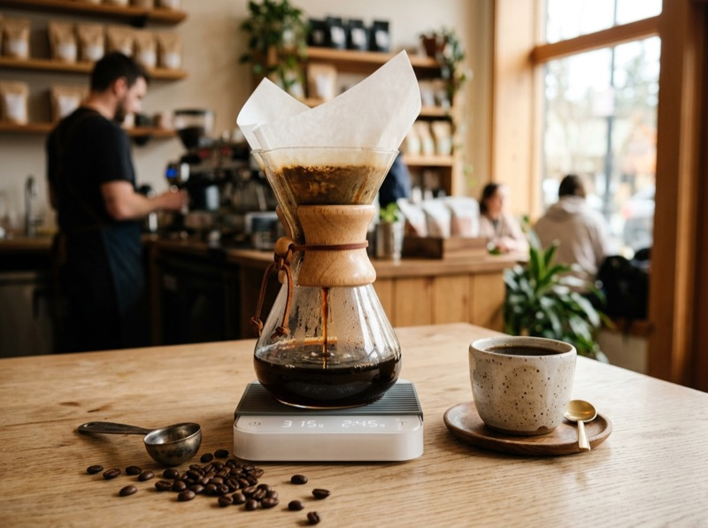
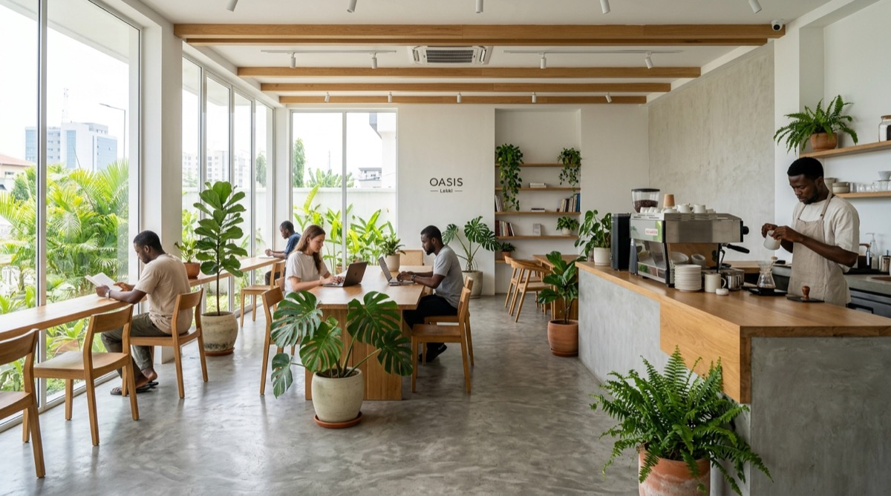
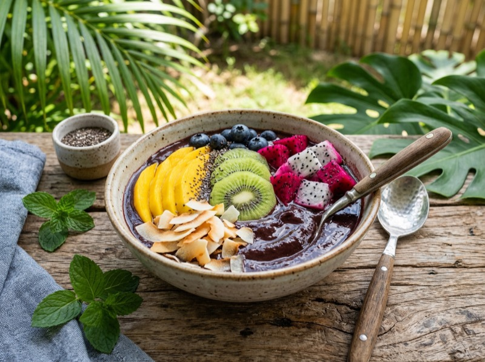
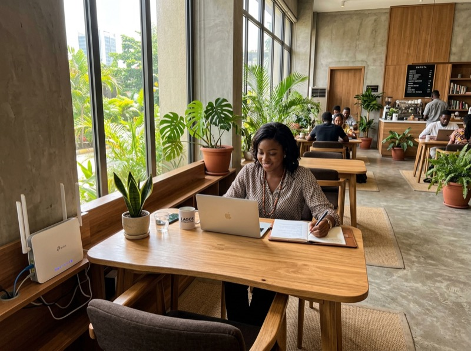

Single OriginSpecialty Pour-Overs & Cold Brew
Ethically sourced Arabica beans from the high plateaus of Taraba State and East Africa, custom roasted in-house weekly for vibrant floral and citrus clarity.
Browse Coffee Selection →Experience Lekki's premier artisan coffee house and co-working sanctuary. We handcraft single-origin African roasts, blend nutrient-dense organic smoothie bowls, and provide a quiet, solar-backed space built for your best thinking.

Thoughtfully curated experiences designed to recharge your body and inspire your mind.

Single OriginEthically sourced Arabica beans from the high plateaus of Taraba State and East Africa, custom roasted in-house weekly for vibrant floral and citrus clarity.
Browse Coffee Selection →
Superfood100% plant-powered bowls featuring wild Amazonian acai, Benue mangoes, Nigerian baobab, fresh tiger nut milk, and grain-free raw superfoods.
See Organic Bowls →
High-Speed FiberEngineered for deep work. Uninterrupted dual-inverter solar power, redundant 200Mbps fiber internet, private call booths, and ergonomic seating.
Book a Work Desk →Everything you need for an inspiring workday or relaxing morning in Lagos.
Never lose your momentum. Our solar battery bank guarantees zero interruption, keeping your laptops and phones charged all day.
Blazing fast multi-carrier fiber backed by low-latency satellite Wi-Fi so your video calls, deployments, and downloads stream seamlessly.
No refined sugars, artificial preservatives, or hydrogenated oils. We craft our pastries with pure sourdough cultures and organic butter.
Sound-dampened booths for confidential client meetings and a library-quiet terrace where you can dive into deep creative flow.
Hear from the founders, artists, and wellness seekers who make Zen Café their daily home.
"Finding reliable power and truly quiet workspace in Lekki was a headache until Zen Café opened. The Taraba pour-over is the cleanest coffee in Lagos."
Senior Product Designer • Remote
"The Acai and Baobab bowl is my post-workout staple. The ingredients taste genuine and fresh, and the staff treats everyone like old friends."
Triathlete & Wellness Coach
"Our small software team books the collaboration table every Thursday for sprint planning. Great Wi-Fi, incredible cold brews, and serene ambiance."
Engineering Lead, Fintech
Located in the heart of Lekki Phase 1, just steps away from Admiralty Way. Peaceful indoor garden setting with ample secure parking.
Open 7 days a week for early risers, remote workers, and relaxed evenings.
| Monday – Friday | 7:00 AM – 8:00 PM |
| Saturday | 8:00 AM – 9:00 PM |
| Sunday | 9:00 AM – 6:00 PM |
| Public Holidays | 8:00 AM – 7:00 PM |